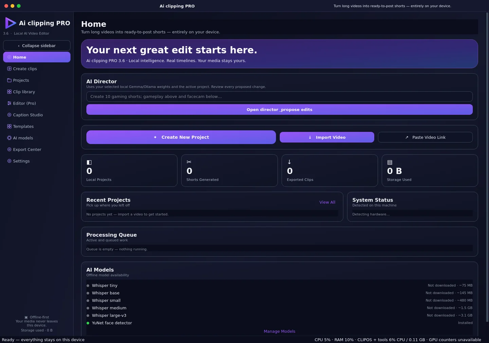
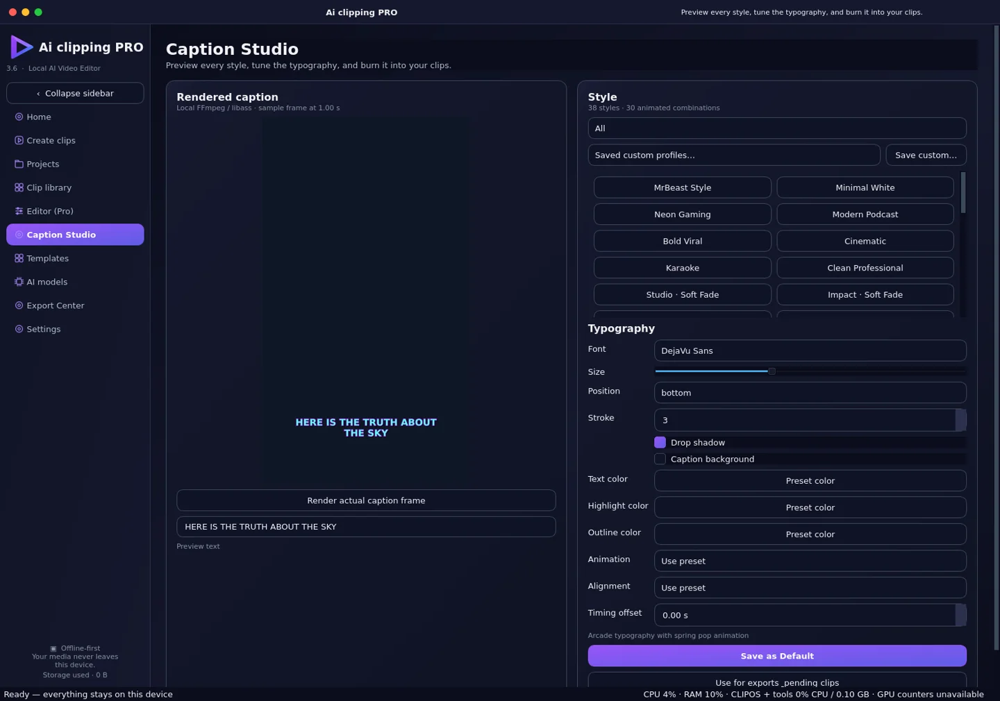
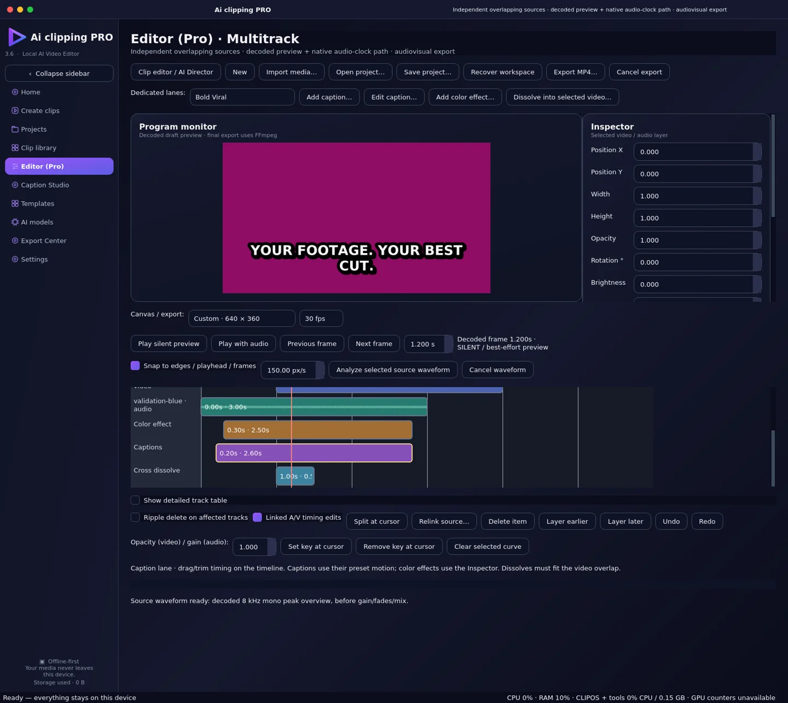

Native desktop · No mandatory account
· No subscription required
Big ideas. Local intelligence.
YOUR DEVICE IS THE STUDIO
◈ Offline-first by design▤ Real local projects✦ AI assistance, you decide↗ Windows · macOS · Linux
NOT A MOCKUP. YOUR ACTUAL WORKSPACE.
Room for your next great edit.
A focused native workspace, from your first import to the final
file. These are real screenshots from Ai clipping PRO v3.6.1.
Ai clipping PRO
/ creator workspace● LOCAL FIRST

Your connected creative workspace.Real import, synchronized styles and explicit local-model checks.

Make every word look like you.38 presets. Local custom profiles. Actual FFmpeg/libass preview
frames.

Real lanes. Real compositing.Actual validation project using generated red/blue test
footage—not user recordings.
Actual application captures. The caption sample uses a plain rendered
background, not generated footage. The editor capture uses generated
red/blue validation footage. No sample project counts or simulated AI
activity.
BUILT TO MAKE THE CUT.
Less friction. More creative control.
Useful tools that work with actual files, real timelines and your
choices. No virality promises. No magic-button claims.
01 / CAPTIONS WITH CHARACTER
Every word. A little more you.
Choose from 38 rendered presets. Customize font, color, outline,
motion, position, alignment and timing. Save your own profiles
locally.
MAKE IT YOURS.ONE GOOD CUT.Illustrative type treatments · explore actual presets in the
app
02 / YOUR TIMELINE, YOUR RULES
⌘
Layers, not limitations on your creativity.
Independent video, audio, caption, color-effect and
cross-dissolve lanes. Trim, split, move, transform and reframe.
Adjust color, rotation, fades and opacity/gain keyframes with
undo and redo.
GAMEPLAYFACECAMAUDIO
03 / LOCAL AI ASSISTANCE
✦
A helping hand. Not a handover.
Optional local Gemma/Ollama assistance proposes bounded edits
for review. Faster-Whisper transcribes locally after an explicit
model download.
Models require separate setup and compatible hardware.04 / A BETTER FIT
9:1616:91:1
One story. More ways to frame it.
Vertical, landscape or square. Gameplay above, facecam below.
Use actual region controls and preview the framing before
export.
05 / FINISH STRONG
↗
From timeline to real files.
MP4 with H.264 or H.265. 30 or 60 fps. Video bitrate, AAC
quality, available hardware encoders and batch export with real
progress and history.
Acceleration depends on detected hardware and drivers.
Picking a Mac build? Apple menu → About This Mac → “Chip:
Apple M…” means Apple Silicon; “Processor: Intel…” means Mac Intel.
Legacy filenames still say CLIPOS for compatibility. The app is Ai
clipping PRO.
Local import, editing and export work offline after setup. Speech
and optional AI models need explicit one-time downloads. Model
setup, URL imports and update checks require internet. No
mandatory cloud account or media upload.
What's included in v3.6?
Ten native destinations, project search/filter/sort, 38 caption
presets, saved custom profiles, actual caption preview frames,
clip and video/audio multitrack editing with dedicated caption,
color-effect and dissolve lanes, a layer inspector, and local
batch exports. See the release notes for verified capabilities.
Are all the showcase features implemented?
Not every illustrated control is implemented. Dedicated caption
lanes burn real ASS captions; color-effect lanes apply timed
brightness/contrast/saturation; transition lanes perform
cross-dissolves between overlapping video items. These are bounded
tools, not an unrestricted effects/plugin library. Decoded
previews are best-effort, not guaranteed realtime.
What should I know about local AI?
Gemma/Ollama is optional and requires compatible, separately
installed local weights. The Director proposes supported edits for
you to review; it is not unrestricted autonomous editing. Live
Gemma quality was not verified without weights in the build
sandbox. Installed dependencies are not proof a model can run.
How do I install or upgrade?
Download only from the official release. Windows: run the EXE.
Mac: choose the matching DMG, then drag the app to Applications.
Linux: install the DEB with your package manager. Back up
important projects first. Existing data paths remain unchanged.
Follow official OS security guidance for unsigned apps; never
disable security protections.
sudo apt install ./CLIPOS_3.6.1_amd64.deb
Do I need a GPU or a subscription?
No mandatory subscription or dedicated GPU. CPU processing is
supported. Performance depends on media resolution, model size and
hardware. Hardware encoding is used only when available; it is not
guaranteed on every device. Some model and dependency licenses
have their own terms.
Can I import any online video?
Only sources you own or are authorized to use. Private content,
DRM and sign-in or source restrictions are not bypassed. Source
services can block downloads; local import remains available.